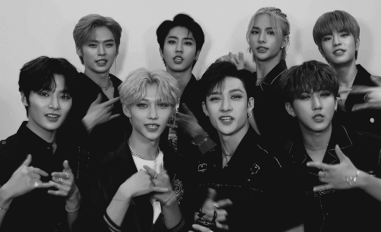

"Step out! Hello, we are Stray Kids!"
O Stray Kids (KR: 스트레이 키즈; JP: ストレイキッズ) é um boy group de oito membros da JYP Entertainment. Os integrantes são: Bang Chan, Lee Know, Changbin, Hyunjin, Han, Felix, Seungmin and I.N. Eles foram formados através do reality show da competição de mesmo nome e estrearam em 25 de março de 2018. com o mini álbum I Am Not. Antes de sua estréia, eles lançaram um mini-álbum, Mixtape, em 8 de janeiro de 2018.
Stray Kids estreou em 25 de março de 2018 com I Am Not e sua faixa-título "District 9".
O grupo anunciou seu nome de fandom, STAY, em 1º de agosto. Isso foi alguns dias antes de seu primeiro retorno em 6 de agosto com a faixa-título "My Pace" e o mini-álbum I Am Who. Finalmente, eles lançaram I Am You em 22 de outubro. Os três mini-álbuns, a série I Am, foram todos lançados em menos de um ano e fazem parte do mesmo ciclo narrativo que gira em torno do tema da identidade e autodescoberta.
Em 13 de novembro, o grupo lançou o videoclipe de "Astronaut", seu primeiro single como um grupo de oito membros.
No Mnet Asian Music Awards de 2020, foi anunciado que o Stray Kids participaria do programa de sobrevivência da Mnet Kingdom: Legendary War. Em 28 de maio de 2021, o grupo lançou uma música para a rodada final da competição intitulada "Wolfgang", que marcou a primeira aparição do grupo no principal Gaon Digital Chart no número 138. Eles venceram o programa em 3 de junho, ganhando seu título. próprio reality show e um show especial da Semana do Kingdom para seu retorno.
Em 10 de fevereiro de 2022, foi anunciado que Stray Kids assinou com a Republic Records para promoções nos Estados Unidos como parte da parceria estratégica da JYP Entertainment com a gravadora. Já em março de 2022, após lançar o mini-album chamado "Oddinary" onde chegaram ao primeiro lugar na parada de albuns da Billboard 200 com a maior semana de vendas.